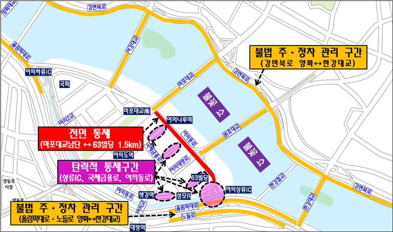

이번 주말(7~8일)은 세계불꽃축제와 마라톤 행사로 각각 여의도와 광화문 등
도심권 일부 구간에서 교통통제가 이뤄져 대중교통을 이용하는 편이 좋겠다.
서울경찰청은 토요일인 7일에는 여의도 일대, 8일에는 광화문에서 숭례문
구간 등 도심권 주요 도로의 교통통제를 시행한다고 5일 밝혔다.
서울세계불꽃축제가 열리는 7일에는 오후 2시부터 밤 11시까지
여의동로(마포대교 남단~63빌딩)가 전면 통제된다. 여의상류IC와 국제금융로,
여의동로는 필요에 따라 탄력적으로 교통이 통제될 예정이다. 또 경찰은 한강
교량이나 강벽북로, 올림픽대로 등 자동차전용도로의 불법 주·정차 차량도
견인 조처하는 등 강력한 단속을 시행할 방침이다. 이튿날인 8일에는 아침
8시부터 오전 11시까지 서울마라톤 행사가 열리면서
세종대로·을지로·청계천로 등 도심권 주요 도로의 교통 불편이 예상된다.
교통통제는 세종대로(광화문↔숭례문) 구간은 새벽 6시30분부터 아침 9시까지,
남대문로·소공로·을지로 구간은 오전 8시5분부터 9시27분까지, 청계천로
구간은 오전 8시21분부터 10시40분까지, 무교로 구간은 오전 7시30분부터
11시까지 통제된다.